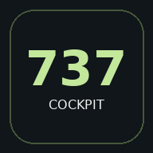

Выберите элемент на панели: откроются его назначение, положения и связи с системами.
Boeing 737-800 · FCOM S7

Скачайте кабину, схемы, русские пояснения, страницы FCOM и вводный урок CBT. Остальные уроки сохраняются отдельно в разделе CBT.
Подготавливаем загрузку…
Держите приложение открытым до завершения загрузки. Её можно приостановить и продолжить позже.
Обновление установит новую версию и перезапустит приложение.
Скачанные материалы хранятся на этом устройстве. Очистка данных браузера удалит их. Для перехода по внешним ссылкам нужен интернет.